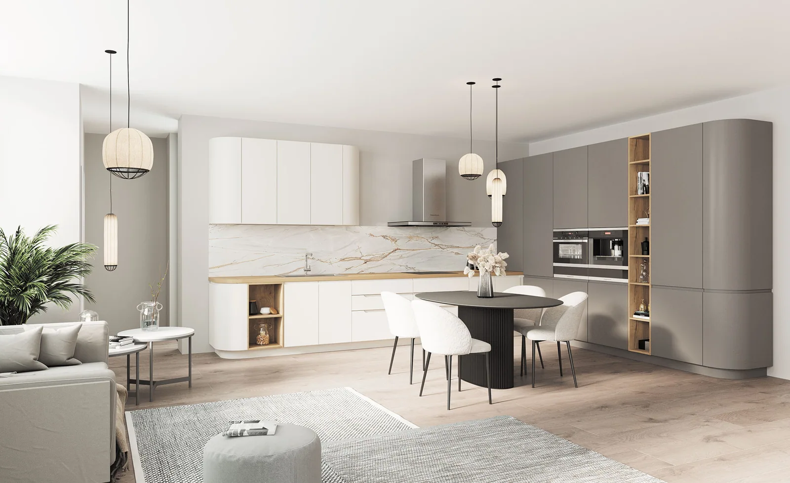
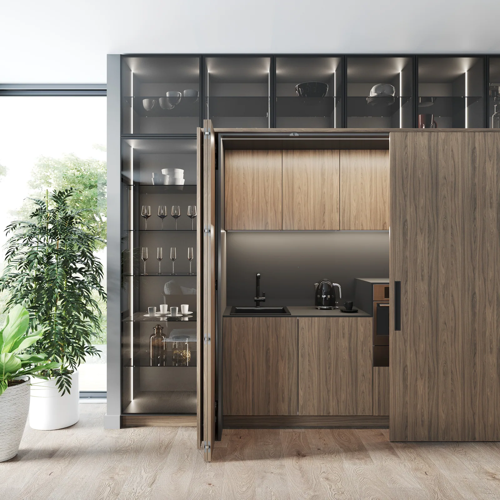

Войдя в комнату, мы не всегда сразу различаем, где заканчивается отделка стены и начинается мебель. Высокие фасады продолжают общую плоскость, дверь совпадает с рисунком панелей, а кухня воспринимается как часть жилого пространства.
За этой визуальной простотой скрывается подробная работа: с размерами, открыванием, вентиляцией, хранением и доступом к технике.
Архитектурный подход к мебели начинается именно здесь — с согласования внешнего вида и повседневных действий.

Что меняется в проектировании
В отчёте Hettich по итогам Salone del Mobile и EuroCucina 2026 отмечены высокие конструкции, интегрированные функции и плавные переходы между кухней и жилыми зонами.
Это направление не требует полностью скрывать мебель или превращать каждую кухню в ровную стену. Оно предлагает рассматривать шкафы, технику и хранение в общей композиции помещения.
Например, высота кухонных секций может согласовываться с дверным проёмом, древесная отделка — продолжаться в гостиной, а открытая ниша — связывать рабочую зону со столовой. Предметы сохраняют свои функции, но перестают выглядеть случайно собранными.
Скрытая кухня бывает разной
Иногда под скрытой кухней понимают встроенный холодильник, посудомоечную машину за фасадом и спокойную композицию без выступающих деталей. В других случаях за дверцами прячется целый участок столешницы с небольшими приборами.
Это разные решения по сложности и способу пользования.
На каталожных изображениях «Прогмы» РИМИ этот принцип можно увидеть в двух состояниях. За центральными дверцами с древесным рисунком находится рабочая ниша с мойкой, чайником и чашками. Закрытые дверцы объединяют её в спокойную плоскость, открытые — дают доступ к рабочей поверхности. На снимках показана одна композиция с разных ракурсов; это иллюстрация скрытой функции, а не преобразование помещения.
Но прежде чем выбрать такое решение, нужно проверить, куда уходят створки, не мешают ли они соседним секциям, удобно ли пользоваться прибором и допускают ли его требования выбранный способ размещения. Работать техника должна в предусмотренных производителем условиях.
Поэтому скрытая функция начинается не с красивой фотографии закрытого шкафа, а с проверки его открытого состояния.


Хранение, которое следует за пространством
Встроенная мебель может помочь организовать сложное помещение: использовать нишу, объединить несколько участков стены, предусмотреть место для бытовых предметов.
При этом стремление занять каждый сантиметр не всегда даёт лучший результат. Дополнительная секция способна сузить проход, усложнить открывание или сделать комнату визуально тяжелее.
Полезно сначала определить, что действительно требуется хранить. Пылесос, гладильная доска, чемоданы и запасной текстиль требуют разных отделений. Их размещение стоит согласовать с тем, где этими вещами пользуются.
Когда назначение секций известно, становится легче решить, какие фасады объединить в одну плоскость, а где оставить нишу, свободный участок стены или открытое хранение.
Цельность создают пропорции
Одинаковый цвет всех поверхностей ещё не делает интерьер цельным. Важны размеры и расположение элементов.
Узкая случайная вставка, несогласованная высота шкафов или резкий переход между материалами могут привлекать больше внимания, чем предполагалось. Поэтому мебель следует рассматривать вместе с потолком, дверями, освещением и отделкой.
Например, высокие кухонные секции и соседний шкаф могут выглядеть связанными, если у них согласованы основные линии и характер фасадов. При этом их наполнение и конструкция будут различаться.
Такая связь особенно заметна в открытом пространстве, где кухня постоянно находится в поле зрения из гостиной. Здесь полезно проверять весь интерьер с нескольких точек, а не только фронтальный вид гарнитура.
Что нельзя прятать без проверки
У спокойного внешнего вида есть техническая сторона. Оборудованию требуется вентиляция, соединениям — предусмотренный доступ, подсветке — возможность обслуживания.
Съёмная панель может выглядеть как обычная часть мебели, но её назначение должно быть понятно владельцу. То же относится к блокам питания, регулируемым опорам и другим обслуживаемым элементам.
Чем больше функций объединено в конструкции, тем важнее согласовать работу участников проекта. Решения по мебели, технике, электрике и отделке должны опираться на актуальные размеры и совместимые требования.
Иначе внешне простая композиция окажется сложной в повседневном пользовании.
Когда открытое решение удобнее
Возможность скрыть предмет ещё не означает, что его нужно прятать.
Кофемашина, которой пользуются несколько раз в день, может быть удобнее на постоянной открытой поверхности. Красивая посуда — в витрине. Небольшая полка с книгами — между кухней и столовой.
Вопрос заключается в том, какие вещи вы готовы видеть и как часто хотите открывать дополнительные дверцы. Для одного человека свободная столешница оправдывает эти действия. Для другого они станут лишним препятствием.
Поэтому архитектурная мебель не обязана быть полностью закрытой. В ней может быть достаточно воздуха, открытых участков и выразительных деталей.
Проектировать сразу в двух состояниях
При обсуждении кухни или встроенного хранения попросите показать два варианта: всё закрыто и мебель находится в работе.
В первом оценивают композицию, пропорции и материалы. Во втором — проходы, доступ, положение створок и удобство действий. Оба состояния одинаково важны.
В «Марли Лимарт» такой разговор можно начать с планировки и привычек владельцев. Определить, какие функции нужно объединить, что стоит оставить открытым и какие технические условия повлияют на конструкцию.
Тогда мебель становится частью архитектуры не только на изображении. Она помогает пространству выглядеть собранно и поддерживает привычную жизнь дома.
Вернуться в блог